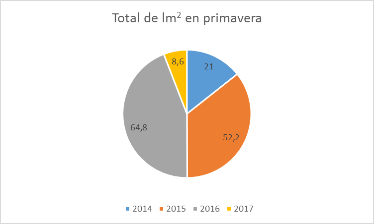

Tablas y gráficos de las lluvias recogidas en Redován durante el periodo primaveral entre los años 2014, 2015, 2016 y 2017.
| L/m2 | 2014 | 2015 | 2016 | 2017 |
|---|---|---|---|---|
| 20-mar | 0 | 1,6 | 0 | 0 |
| 21-mar | 0 | 2,4 | 0 | 0 |
| 22-mar | 0 | 10,4 | 0 | 0 |
| 23-mar | 0 | 12 | 15,8 | 0 |
| 24-mar | 0 | 0 | 3,8 | 0 |
| 25-mar | 0 | 2,4 | 0 | 0 |
| 26-mar | 0 | 0 | 0 | 0 |
| 27-mar | 0 | 0 | 0 | 0,2 |
| 28-mar | 0 | 0 | 0 | 0 |
| 29-mar | 0 | 0 | 0 | 0 |
| 30-mar | 0 | 0 | 0 | 0 |
| 31-mar | 0 | 0 | 0 | 0 |
| 01-abr | 0 | 0 | 0 | 0 |
| 02-abr | 0,8 | 0 | 0 | 0 |
| 03-abr | 7,6 | 0 | 0 | 0 |
| 04-abr | 0 | 0 | 0 | 0 |
| 05-abr | 0 | 0 | 0 | 0 |
| 06-abr | 0 | 0 | 4,2 | 0 |
| 07-abr | 0 | 0 | 0 | 0 |
| 08-abr | 0 | 3,4 | 10,6 | 0 |
| 09-abr | 0 | 0 | 0,4 | 0 |
| 10-abr | 0 | 0,2 | 0 | 0 |
| 11-abr | 0 | 0 | 0,8 | 0 |
| 12-abr | 0 | 0,4 | 0 | 0 |
| 13-abr | 0 | 0 | 0 | 0 |
| 14-abr | 0 | 0 | 0 | 0 |
| 15-abr | 0 | 0 | 0 | 0 |
| 16-abr | 0 | 0,2 | 0 | 0 |
| 17-abr | 0 | 0 | 0 | 0 |
| 18-abr | 0 | 0 | 0 | 0 |
| 19-abr | 0 | 0 | 0 | 0 |
| 20-abr | 0 | 0 | 0 | 0 |
| L/m2 | 2014 | 2015 | 2016 | 2017 |
|---|---|---|---|---|
| 21-abr | 3,6 | 0 | 0 | 0 |
| 22-abr | 0 | 0 | 0 | 0 |
| 23-abr | 0 | 0 | 0 | 0 |
| 24-abr | 0 | 0,2 | 0 | 0 |
| 25-abr | 0 | 0 | 0 | 0 |
| 26-abr | 0 | 0 | 0 | 0 |
| 27-abr | 0 | 0 | 0 | 4,6 |
| 28-abr | 0 | 0,4 | 0 | 3 |
| 29-abr | 0 | 0 | 0 | 0,4 |
| 30-abr | 0 | 0 | 0 | 0 |
| 01-may | 0 | 0 | 0 | 0 |
| 02-may | 0 | 0 | 0 | 0 |
| 03-may | 0 | 0 | 0,2 | 0 |
| 04-may | 0 | 0 | 0 | 0 |
| 05-may | 0 | 0 | 0 | 0 |
| 06-may | 0 | 0 | 0 | 0 |
| 07-may | 0 | 0 | 0 | 0 |
| 08-may | 0 | 0 | 0 | 0 |
| 09-may | 0 | 0 | 1,2 | 0 |
| 10-may | 0 | 0 | 0 | 0 |
| 11-may | 0 | 0 | 0 | 0 |
| 12-may | 0 | 0 | 0 | 0 |
| 13-may | 0 | 0 | 2,8 | 0 |
| 14-may | 0 | 0 | 0,6 | 0 |
| 15-may | 0 | 0 | 7 | 0 |
| 16-may | 0 | 0 | 13 | 0 |
| 17-may | 0 | 0 | 0 | 0 |
| 18-may | 0 | 0 | 0 | 0 |
| 19-may | 0 | 0 | 0 | 0 |
| 20-may | 0 | 0 | 0 | 0 |
| 21-may | 0 | 0 | 0 | 0 |
| 22-may | 0 | 3,4 | 0 | 0 |
| L/m2 | 2014 | 2015 | 2016 | 2017 |
|---|---|---|---|---|
| 23-may | 0 | 0 | 0 | 0 |
| 24-may | 0 | 0 | 0 | 0 |
| 25-may | 0 | 0 | 0 | 0 |
| 26-may | 0 | 0 | 0 | 0 |
| 27-may | 0 | 0 | 0 | 0 |
| 28-may | 0 | 0 | 0 | 0 |
| 29-may | 0 | 0 | 0 | 0 |
| 30-may | 0 | 0 | 0 | 0 |
| 31-may | 1 | 0 | 0 | 0 |
| 01-jun | 4,6 | 0,8 | 0 | 0 |
| 02-jun | 0 | 6 | 0 | 0 |
| 03-jun | 0 | 0 | 0 | 0 |
| 04-jun | 0 | 0 | 0 | 0,4 |
| 05-jun | 0 | 0 | 0 | 0 |
| 06-jun | 0 | 0 | 0 | 0 |
| 07-jun | 0 | 0 | 0 | 0 |
| 08-jun | 0 | 0 | 4,4 | 0 |
| 09-jun | 0 | 0 | 0 | 0 |
| 10-jun | 0 | 0 | 0 | 0 |
| 11-jun | 0 | 0 | 0 | 0 |
| 12-jun | 0 | 0 | 0 | 0 |
| 13-jun | 0 | 7,8 | 0 | 0 |
| 14-jun | 0 | 0 | 0 | 0 |
| 15-jun | 0 | 0,6 | 0 | 0 |
| 16-jun | 0 | 0 | 0 | 0 |
| 17-jun | 3,4 | 0 | 0 | 0 |
| 18-jun | 0 | 0 | 0 | 0 |
| 19-jun | 0 | 0 | 0 | 0 |
| 20-jun | 0 | 0 | 0 | 0 |
| 21-jun | 0 | 0 | 0 | 0 |
Fuente: Web Datosclima

Fuente: Elaboración propia a partir datos Aemet.
Comentario del gráfico
En este gráfico de barras.......

Fuente: Elaboración propia a partir datos Aemet.
Comentario del gráfico
En este gráfico ciruclar.......